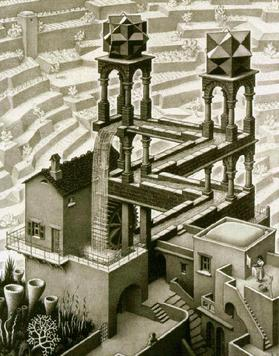
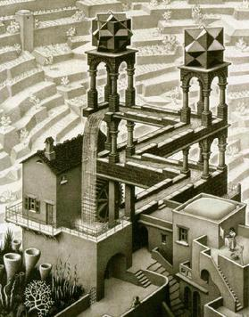

Monster Puzzles

John Horton Conway once said:
You get surreal numbers by playing games. I used to feel guilty in Cambridge that I spent all day playing games, while I was supposed to be doing mathematics. Then, when I discovered surreal numbers, I realized that playing games IS math.
This platform's sole purpose is for all who are interested in recreational mathematics or mathematical puzzles to discuss these topics. The platform is for students to share, learn and discuss, aiming to explore the beauty of mathematics.
The name of this platform refers to the monster group, the largest of the sporadic simple groups, and the logo is the glider in Conway's Game of Life, which has simple rules but many deep theorems, including that it is Turing complete (meaning that it is, in some sense, able to perform any calculation any computer can do).
Our Team
Founders:

Warren Bei, cofounder and lead instructor, 2021 IMO Canada team member. Warren likes mathematics, puzzles, J. S. Bach and M. C. Escher, chess, Hanabi, programming, hiking and travelling.

Kevin Zhu, cofounder and student of Semiahmoo Secondary. Kevin enjoys spending his free time reading, solving riddles and playing strategy games.

Eric Zhu, administrator and his hobbies are travelling, reading. Eric also enjoys watching movies!
To register, join the Discord and follow the instructions there. If you have any questions, email us.
Vancouver, British Columbia
Copyright: © Monster Puzzles 2021-2021
 
